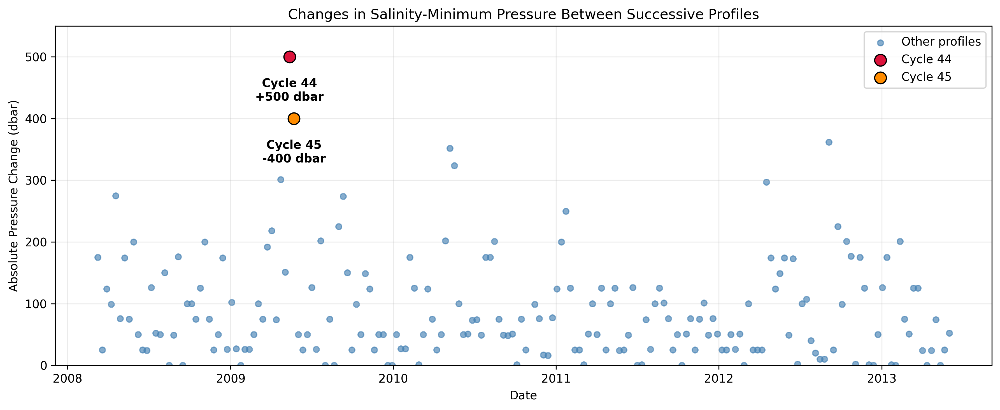
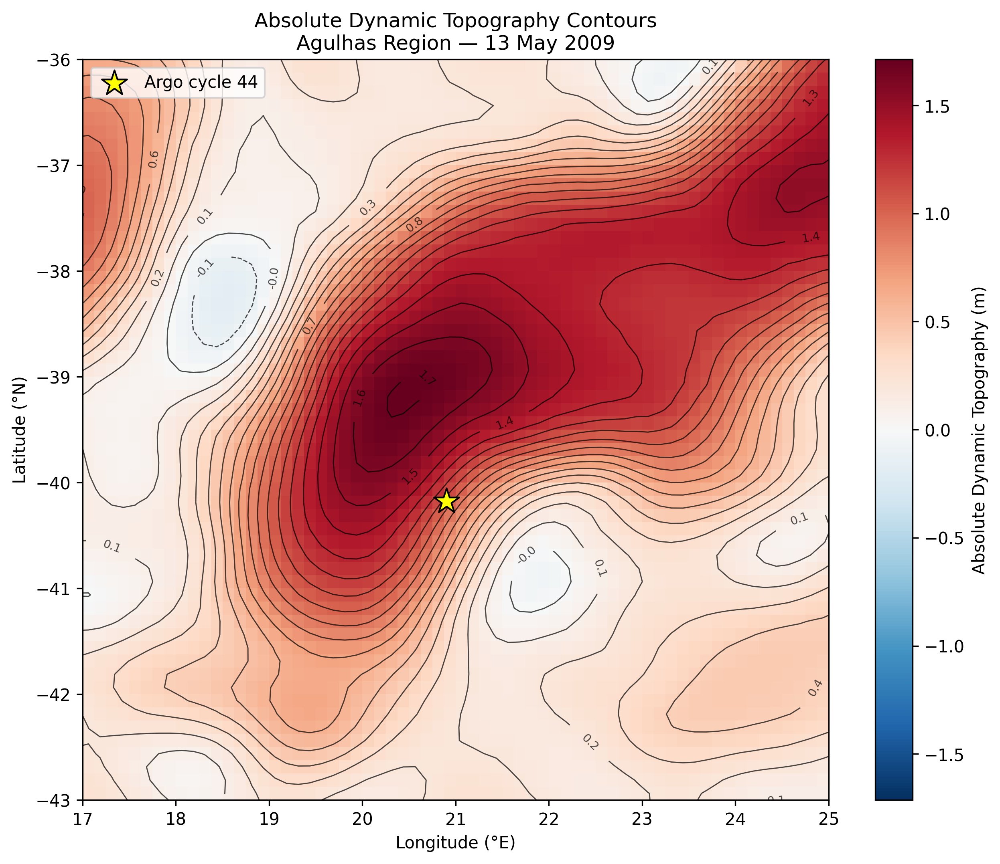
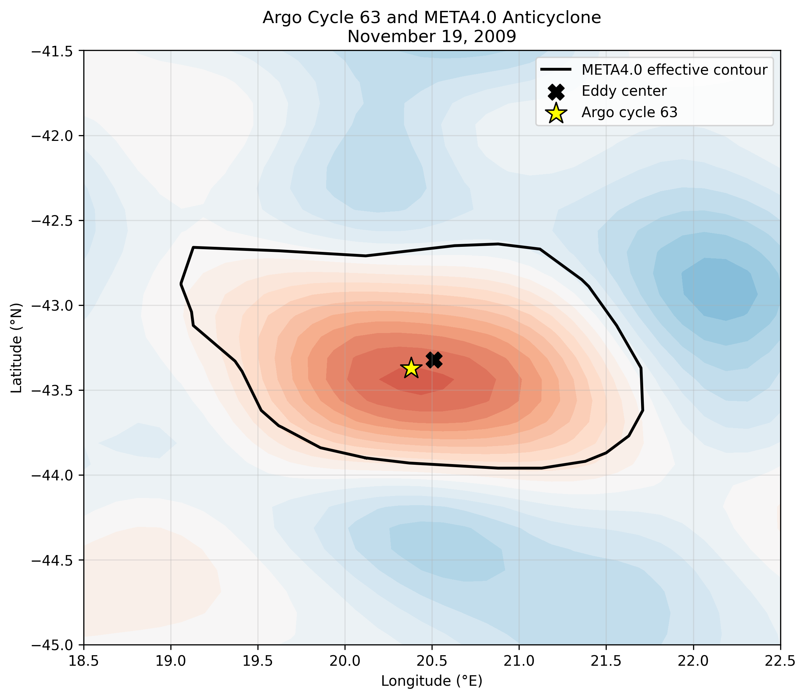
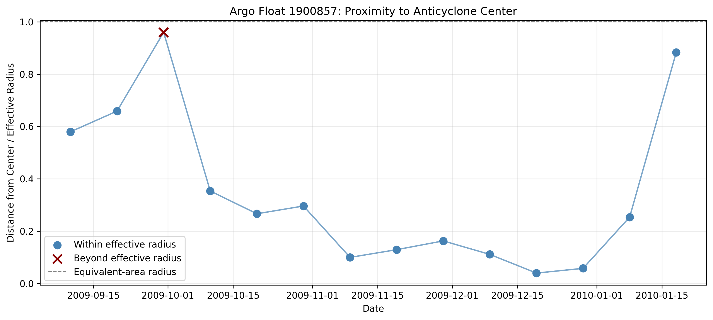

It Began with an Unexpected Observation
What started as an exercise in learning argopy, a Python library for accessing Argo float data, quickly became something more interesting. To familiarize myself with its features, I selected Argo float 1900857, one of the examples provided in the documentation. Armed with concepts I'd learned in oceanography class just a week earlier, I began plotting temperature, salinity, and density profiles.
One profile immediately stood out.
On May 13, 2009, the float recorded unusually warm, saline water at intermediate depths. At approximately 500 dbar, the temperature was more than 6°C higher than in the profiles recorded immediately before and after it.
Was this a measurement error? A different water mass? Or evidence of something larger?
Curious, I began investigating. I checked the data quality, examined the density structure, and searched satellite observations for clues. The evidence pointed toward a possible mesoscale eddy, but I couldn't confirm that the float had actually encountered one.
Rather than stop there, I expanded my analysis to the float's complete record. That's when I discovered a second anomaly later in 2009, which persisted across multiple profiles.
What started as a programming exercise had become an investigation into the ocean's mesoscale circulation.
Following the Evidence
From Exploration to Anomaly Detection
The Argo dataset was manageable enough that I could start experimenting right away, applying concepts I'd learned in oceanography class just a week earlier.
I began by plotting temperature, salinity, and density profiles, then examined how the depth of the intermediate salinity minimum changed along Argo float 1900857's trajectory between 2008 and 2013.
The resulting time series showed considerable variability, but one observation stood out. Rather than rely on visual inspection alone, I decided to calculate the changes between successive profiles to see just how unusual it was.

Investigating the Anomaly
The results confirmed what had caught my attention. On 13 May 2009, cycle 44 recorded the largest change in the dataset. The salinity minimum had shifted to 1,138 dbar, approximately 500 dbar deeper than in the preceding profile. Just ten days later, it returned upward by roughly 400 dbar.

Such a dramatic change over a relatively short period was intriguing. But the position of the salinity minimum alone couldn't tell me what was happening. I needed to look at the water column more closely.
I compared the temperature, salinity, and potential-density profiles from cycles 43, 44, and 45. The differences were striking. At intermediate depths, cycle 44 contained much warmer and saltier water than either neighboring profile, accompanied by substantially lower potential density.

What initially appeared to be an unusual shift in the salinity minimum was part of a much broader change in the water column's hydrographic structure.
I began to wonder whether the float had encountered a different water mass or perhaps a larger oceanographic feature. But there was another possibility I needed to consider before pursuing either explanation: the measurements themselves might be wrong.
Next question: Could the measurements be wrong?
Could the Measurements Be Wrong?
Before looking for an oceanographic explanation, I needed to rule out a more mundane possibility: faulty measurements. An instrument malfunction or processing error could produce an unusual profile, so I started by checking the Argo quality-control flags.
All 110 pressure-level observations examined in cycle 44 had QC flag 1, indicating good-quality data across the measured pressure range of 16–2005 dbar.
The quality-control results were reassuring, but I wanted to know whether the anomaly extended through the water column or was confined to a few measurements.
Examining the Vertical Structure
I compared the position of the same potential-density surface, or isopycnal, across cycles 43, 44, and 45. If the unusual temperature and salinity measurements reflected a broader change in the water column, I expected to see a corresponding difference in its density structure.
And there was one.
In cycle 44, the σ₀ = 27.0 kg/m³ isopycnal occurred at approximately 879 dbar, about 406 dbar deeper than its average position in the neighboring profiles. This was a substantial displacement, suggesting that the anomaly involved more than a handful of unusual measurements.

The combination of good quality-control flags and a coherent density anomaly gave me reason to treat cycle 44 as a plausible oceanographic observation. It wasn't proof that every measurement was correct, but there was no obvious reason to dismiss the profile as an artifact.
That left the more interesting question: what physical process could produce such an unusual structure?
Next question: What physical process could produce this structure?
Searching for a Physical Explanation
The measurements appeared credible, but their physical explanation remained uncertain. What process could produce unusually warm, saline, and relatively low-density water at intermediate depths, accompanied by a substantial depression of density surfaces?
A Possible Mesoscale Eddy
One possibility was that the float had encountered an anticyclonic mesoscale eddy. These rotating ocean features can redistribute water masses and alter the vertical structure of the water column.
Warm-core anticyclonic eddies commonly exhibit depressed isopycnals, allowing relatively warm water to extend deeper than in surrounding waters. This provided a plausible explanation for the hydrographic structure observed in cycle 44.
Why the Agulhas Region Matters
The float was operating in the Agulhas region of the southeastern Atlantic, where energetic currents, frontal interactions, and mesoscale eddies produce substantial hydrographic variability.
Eddies originating from the Agulhas system can transport relatively warm, saline Indian Ocean water into the Atlantic. An encounter with such a feature could potentially explain the unusual properties recorded by the float.
From Hypothesis to Evidence
The hydrographic observations were consistent with an eddy encounter, but they were not sufficient to confirm one. Other processes, including frontal crossings and water-mass variability, could also produce abrupt differences between successive profiles.
To investigate the eddy hypothesis, I turned to satellite altimetry. Sea-level anomaly measurements provide an independent way to examine mesoscale circulation near the float's position.
Searching for Satellite Evidence
The hydrographic structure observed in cycle 44 suggested a possible anticyclonic eddy encounter. To investigate this hypothesis, I examined satellite-derived sea-level anomaly observations near the float's position on 13 May 2009.
Looking for Clues from Space
The hydrographic profiles suggested that cycle 44 might have encountered an anticyclonic eddy. But could I find evidence of one near the float on 13 May 2009?
I turned to satellite altimetry, which measures variations in sea-surface height. In the Southern Hemisphere, anticyclonic eddies are often associated with elevated sea surfaces, making satellite observations a useful starting point.
I compared two satellite-derived products: sea-level anomaly (SLA), which measures deviations from the mean sea surface, and absolute dynamic topography (ADT), which incorporates the mean dynamic topography.
Both showed elevated sea-surface height near the float, although the surrounding patterns differed. The SLA map suggested a relatively localized feature, while the ADT field showed a broader region of elevated sea surface extending northeastward. There was clearly interesting circulation in the area, but identifying a distinct eddy was less straightforward.

Following the Circulation Through Time
A single satellite image offered only a snapshot of the circulation. I wanted to see how the surrounding features had evolved before the anomalous profile.
Using satellite observations from April and May 2009, I created an animation of the changing sea-level anomaly field. The sequence revealed several evolving positive and negative anomalies, illustrating just how dynamic the region was.
Testing the Eddy Boundary
To move beyond visual interpretation, I examined the AVISO Mesoscale Eddy Trajectory Atlas (META4.0), which identifies and tracks mesoscale eddies using satellite altimetry.
The atlas identified a candidate anticyclone near the float on 13 May. Its center was approximately 125 km away, with a reported effective radius of about 117 km. Although the float was close to the feature, those measurements alone couldn't establish whether it was inside the eddy.
The boundary map provided a clearer answer. The float's position fell outside the candidate anticyclone's satellite-derived effective contour.
This was an important distinction. The hydrographic observations were consistent with an anticyclonic influence, and the satellite data showed a nearby eddy, but I couldn't confirm that the float had actually entered it.

Following the Candidate Anticyclone
I also investigated the satellite-derived eddy-tracking records to determine whether the nearby anticyclone could be traced through time.
The candidate feature was associated with a branching tracking network extending back to January 2009. This indicated that the satellite observations were part of a more complex history of tracked mesoscale features, rather than an isolated observation.
However, a branching tracking network does not necessarily represent the uninterrupted lifetime of one coherent eddy. Nor did the available spatial evidence confirm that cycle 44 occurred within the candidate anticyclone's boundary.
An Unresolved Encounter
I also explored the eddy-tracking records to see whether the candidate feature could be followed through time. The records revealed a branching network of tracked features extending back to January 2009, but this did not establish the continuous history of a single coherent eddy.
Rather than force an explanation, I decided to broaden the investigation. Cycle 44 had the deepest σ₀ = 27.0 kg/m³ isopycnal in the float's entire record, but was it truly an isolated event?
I returned to the full dataset to find out.
Looking Beyond Cycle 44
My investigation of cycle 44 had reached an impasse. The hydrographic measurements were convincing, and the satellite observations suggested that an anticyclonic eddy might have been involved. But the float's position outside the nearby eddy boundary meant I couldn't confidently connect the two.
TI had been concentrating on a single profile because it was so unusual. What if I was overlooking something by focusing only on the most extreme observation?
I returned to the complete record of Argo float 1900857 and plotted the depth of the σ₀ = 27.0 kg/m³ isopycnal across all 192 cycles. Cycle 44 still stood out, reaching approximately 879 dbar, the deepest position recorded during the float's observations.
But something else caught my attention.
Later in 2009, between cycles 60 and 68, the isopycnal descended again. This time, instead of a single dramatic excursion followed by a rapid return to its previous position, the float recorded unusually deep isopycnals across a succession of profiles.

The pattern became even more striking when I examined the numbers. Of the ten deepest observations of this isopycnal in the entire record, eight occurred between cycles 60 and 68.
Cycle 44 might have been the most extreme individual event, but this second interval was harder to dismiss as an isolated encounter.
I wanted to know whether the resemblance extended beyond the displaced isopycnals. Were these later profiles also recording the unusually warm, saline water I had encountered in May?
A Familiar Hydrographic Signature
To investigate, I compared Conservative Temperature, Absolute Salinity, and potential density at approximately 500 dbar, using the same properties that had first drawn my attention to cycle 44.
The results were remarkably similar.
During cycles 60–68, the float again encountered warmer, more saline water with lower potential density than the neighboring profiles around cycle 44. The changes were not quite as extreme as those recorded in May, but the combination of properties was familiar.
At approximately 500 dbar, Conservative Temperature during cycles 60–68 ranged from 11.0 to 11.6°C, compared with 13.4°C during cycle 44. Absolute Salinity was also elevated, while potential density remained relatively low. The later profiles weren't quite as extreme as the May observation, but the combination of properties was familiar.
View hydrographic measurements at 500 dbar
Comparison of Conservative Temperature (CT), Absolute Salinity (SA), and potential density (σ₀) during the May 2009 anomaly and the subsequent event between cycles 60 and 68.
| Cycle | CT (°C) | SA (g/kg) | σ₀ (kg/m³) |
|---|---|---|---|
| 43 | 6.298 | 34.553 | 27.034 |
| 44 | 13.414 | 35.445 | 26.524 |
| 45 | 6.666 | 34.579 | 27.006 |
| 60 | 11.132 | 35.138 | 26.732 |
| 62 | 10.963 | 35.104 | 26.735 |
| 64 | 11.462 | 35.208 | 26.724 |
| 66 | 11.077 | 35.133 | 26.737 |
| 68 | 11.615 | 35.092 | 26.606 |
Measurements are evaluated at approximately 500 dbar. Cycle 44 represents the initial anomaly; cycles 60–68 represent the later interval of sustained isopycnal depression.
I now had two episodes in the same float record that shared an unusual combination of properties: depressed isopycnals, elevated temperature and salinity, and reduced potential density at intermediate depths.
That didn't mean the float had encountered the same eddy twice. In fact, there was no reason to assume it had. But the similarities suggested that related oceanographic processes might be responsible.
There was another difference that seemed important. The May anomaly appeared in one profile, whereas the later event extended across multiple observations. That gave me an opportunity I hadn't had before: I could examine how the float moved while these conditions persisted.
Following the Float
I mapped the float's trajectory between cycles 55 and 73, covering the period before, during, and after the second anomaly.
The positions associated with cycles 60–68 occupied a relatively restricted geographic region. Combined with the repeated hydrographic anomalies, this made me wonder whether the float was moving within, or repeatedly sampling, a coherent mesoscale feature.

The trajectory alone couldn't tell me whether an eddy was present. A float's path is influenced by the currents it encounters, and a cluster of positions doesn't necessarily indicate that it has become trapped in a rotating feature.
But unlike cycle 44, I now had a sequence of observations showing similar conditions over an extended period, together with the float's changing geographic position.
It was enough to justify another look from space.
I selected 19 November 2009, corresponding to cycle 63, and returned to the satellite altimetry records. This time, I wasn't looking for an explanation for a single unusual profile. I was looking for a feature that might account for an entire sequence of observations.
Eddy Tracking
Returning to Satellite Altimetry
When I returned to the satellite altimetry data, I was cautiously optimistic. The second hydrographic anomaly had given me more to work with than cycle 44: multiple profiles showing unusually warm, saline water, persistently depressed isopycnals, and a float trajectory concentrated within a relatively small geographic area.
But I was reluctant to get ahead of myself. During my earlier investigation of cycle 44, the satellite observations had looked equally promising. I had found a nearby anticyclone, only to discover that the float's recorded position on 13 May 2009 fell just outside its effective contour.
I didn't want to mistake proximity for evidence of an encounter again.
This time, I examined the satellite-derived sea-level anomaly field for 19 November 2009, corresponding to cycle 63.
And there it was: a prominent positive sea-level anomaly near the float's position, with a relatively coherent spatial structure.

It was an encouraging first result. Positive sea-level anomalies are often associated with anticyclonic eddies, and the feature appeared in approximately the right place at the right time.
But I had seen something similar before. The next question was whether an independently identified anticyclone actually enclosed the float.
Finding the Anticyclone
I returned to the AVISO Mesoscale Eddy Trajectory Atlas (META4.0), the same dataset I had used to investigate the May anomaly.
I searched for anticyclonic eddies near the float's position on 19 November and found a candidate associated with the positive sea-level anomaly. I then overlaid its satellite-derived effective contour onto the sea-level anomaly map.
This was the moment I had been hoping for.
The float was inside the contour.

After the inconclusive investigation of cycle 44, seeing the float enclosed by an independently identified eddy boundary was particularly satisfying. For the first time in this investigation, the hydrographic anomaly, the positive sea-level anomaly, and the satellite-derived eddy identification all pointed toward the same explanation.
I was excited, but there was still an important distinction to make. The contour established that the float's observed surface position lay within the satellite-identified eddy boundary on that date. It didn't yet tell me whether the float had remained associated with the feature throughout the anomalous interval.
To investigate that, I needed to follow the eddy through time.
Reconstructing the Eddy's History
The candidate anticyclone was identified in META4.0 as track 477593, segment 10. I retrieved the corresponding tracking records and found 144 daily observations extending from 1 September 2009 to 22 January 2010.
This was another encouraging result. The feature I had identified in November was not simply an isolated detection on a single satellite map. It belonged to a tracked anticyclone whose recorded history extended across several months, encompassing the period of the float's second hydrographic anomaly.
I now had two independent records to compare: the float's observations and the satellite-derived positions of the anticyclone.
If the float had been sampling this eddy over an extended period, their geographic movements might reveal that association.
Comparing Their Paths
I plotted the anticyclone's daily center positions alongside the float's trajectory between September 2009 and January 2010.

The resulting map was encouraging. The float and anticyclone followed broadly similar geographic paths during much of the tracking period, suggesting that their association might extend beyond the single observation on 19 November.
By this point, several pieces of evidence had come together. The float had recorded a sustained hydrographic anomaly, satellite altimetry revealed a nearby positive sea-level feature, an independently tracked anticyclone enclosed the float on 19 November, and their trajectories appeared geographically related.
After the uncertainty surrounding cycle 44, it was satisfying to see these different observations begin to reinforce one another.
Still, I wanted to be careful about what the evidence actually demonstrated. Similar trajectories did not necessarily mean that the float had remained inside the eddy. Two objects can travel through the same region without one being enclosed by the other, and the eddy's irregular shape made simple comparisons of their positions insufficient.
This time, rather than stopping at a promising map, I wanted to test the relationship directly. I needed to compare each float position with the eddy's boundary on the corresponding date.
Putting the Evidence to the Test
Was the Float Really Inside the Eddy?
To quantify the relationship between the float and the tracked anticyclone, I matched each available Argo observation with the corresponding daily eddy record.
The satellite observations were promising, but I wanted to know whether the float had remained associated with the anticyclone throughout the anomalous interval, rather than simply passing through it on 19 November 2009.
I began by matching the float's observations with the corresponding daily eddy records and calculating the distance between their positions, normalized by the eddy's effective radius.

The results suggested a close association, but there was a problem with this approach. An eddy's effective radius describes a circle of equivalent area, while its actual boundary can be irregular. A float could therefore be within one effective radius of the center without being inside the eddy.
To resolve this, I retrieved the satellite-derived effective contours and performed a point-in-polygon test for each matched observation.
Of the 14 float positions examined, 13 fell inside the anticyclone's effective contour.
The exception was cycle 58, recorded on 30 September 2009. Interestingly, its normalized distance was approximately 0.96, meaning the simpler radius-based calculation would have suggested containment. The actual contour revealed otherwise.
More importantly, cycles 59–69 represented 11 consecutive observed positions inside the tracked anticyclone, spanning approximately 100 days between 10 October 2009 and 18 January 2010.
After the uncertainty surrounding cycle 44, this was the confirmation I had been hoping to find: not just a single observation near an eddy, but repeated geographic evidence supporting an extended association.
What I Found
The investigation had begun with an unusual salinity profile that I couldn't explain. My initial hypothesis that cycle 44 had encountered an anticyclonic eddy, remained unresolved. But looking beyond that single observation revealed a second event, one supported by several independent lines of evidence.
The hydrographic measurements showed persistently warm, saline, relatively low-density intermediate waters and depressed isopycnals. Satellite altimetry identified a nearby anticyclone, and the geographic containment tests demonstrated that the float repeatedly occupied its effective contour.
There were limits to what I could conclude. With approximately ten days between Argo profiles, I couldn't establish continuous containment, and satellite-derived surface boundaries alone couldn't demonstrate subsurface trapping. Nevertheless, the combined evidence strongly supported an extended association with the anticyclone.
When I started exploring this dataset, I was simply applying concepts from my oceanography coursework to real observations. I hadn't expected to find myself investigating satellite altimetry, tracking mesoscale eddies, or testing geographic boundaries.
What I enjoyed most was discovering where an unexpected observation could lead, and learning that an inconclusive result didn't necessarily mean the investigation was over.
But identifying the anticyclone raised another question. I had established where the float was during the encounter, but what could its measurements tell me about the water masses and hydrographic structure within the eddy?
That's where the next part of this investigation begins.